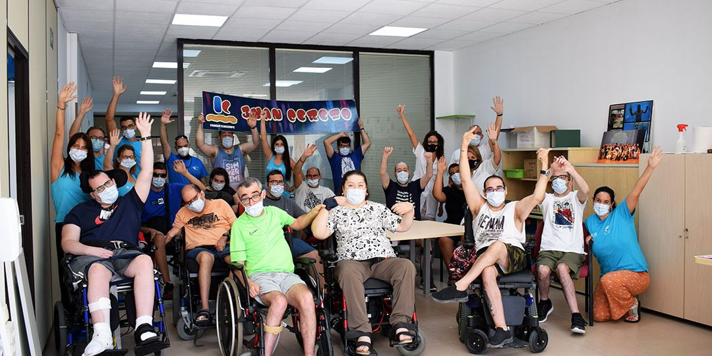

<div class="container contenido-principal d-flex flex-column justify-content-center align-items-center">
    <section>
        <div class="contenedor-imagen-enlace">
            <div class="contendor1 contenedor-imagen">
                
            </div>
            <div class="contendor2 contenedor-enlace">
                <h3>HOGAR</h3>
                <p class="text-center">El Servicio de Hogar data de 2004, funciona las 24 hs del día los 365 días del año, en una casa alquilada, alojamos a adultos con distintas discapacidades, que requieren de una atención especial y que por diversas circunstancias no pueden vivir con su familia.</p>
                <button class="btn btn-white" type="button" id="btn-ver-hogar">Ver más</button>
            </div>
        </div>
        <div class="contenedor-imagen-enlace" id="contenedorgeneral">    
            <div class="contendor1 contenedor-enlace color2" id="c1">
                <h3>CENTRO DE DÍA</h3>
                <p class="text-center">El Servicio de Centro de Día Mary Serrano inició sus actividades en 1996, en una casa cedida por la Municipalidad. El servicio esta dirigido para aquellas personas adultas con discapacidades profundas o severas las cuales por sus condiciones no pueden acceder a un trabajo protegido.</p>
                <button class="btn btn-white" type="button" id="btn-ver-centro-dia">Ver más</button>
            </div>
            <div class="contendor2 contenedor-imagen" id="c2">
                
            </div>
        </div>
        <div class="contenedor-imagen-enlace">
            <div class="contendor1 contenedor-imagen">
                
            </div>
            <div class="contendor2 contenedor-enlace">
                <h3>TALLER PROTEGIDO</h3>
                <p class="text-center">El Taller Protegido ”Necochea” se creó en 1989, con el fin de brindar puestos de trabajo a jóvenes y adultos con discapacidad, los cuales ya han concluido su etapa de escolarización, los cuales no pueden desempeñarse en el mercado laboral competitivo.</p>
                <button class="btn btn-white" type="button" id="btn-ver-taller">Ver más</button>
            </div>
        </div>
    </section>
</div>